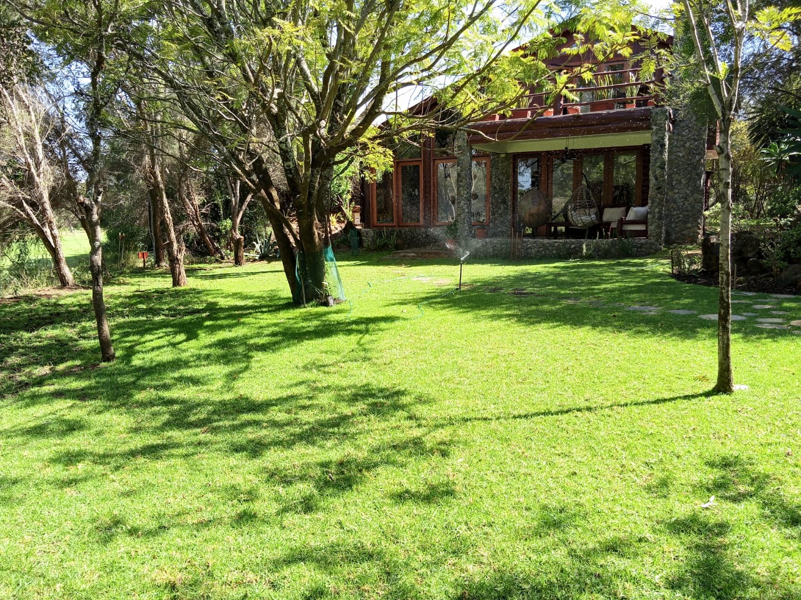

Mucheru World of Golf
Operational shift breakdown and utilization for heavy earthmoving equipment on site:
| Equipment Description | Primary Site Operations | Operating Hours | Hourly Rate | Total Cost (KES) |
|---|---|---|---|---|
| Backhoe Loader (XGMA) | Uneven ground levelling, rough shaping, teebox grading (Nos. 4 & 18), spreading dumped spoil | 9.0 hrs | KES 6,500 | KES 58,500 |
| Consolidated Machinery Billing Total | 9.0 hrs | - | KES 58,500 | |
- Ground Levelling & Spoil Spreading: The Backhoe Loader completed 9.0 operational hours aggressively levelling uneven ground, cutting high spots, and spreading dumped excavated soil across designated fairway sectors.
- Teebox Levelling (Nos. 4 & 18): Carried out grading and surface leveling on Championship Teebox No. 4 and Teebox No. 18 to establish uniform elevations and accurate launch platforms.
- Green No. 10 Fine Levelling: Manual labor teams performed precision ground shaping and rake-grading across Green No. 10 in preparation for subsequent drainage and subgrade works.
- Green No. 15 Drainage Trenching: Excavated structured herringbone drainage trenches across the marked profile of Green No. 15 to ensure optimal subsurface water runoff and green aeration.
- Hardcore Rock Deliveries (Greens 11, 14, 15, 16): Sustained haulage and offloading of bulk hardcore rocks via tipper trucks for green sub-base foundation construction across Greens 11, 14, 15, and 16.
- Green No. 15 Sub-base Foundation Placement: Active labor teams placed, hand-packed, and arranged delivered hardcore rocks into the excavated sub-base grid of Green No. 15.
Green No. 15 Foundation & Drainage Milestones
Subsurface drainage trenching on Green No. 15 is progressing rapidly in tandem with systematic hardcore stone sub-base arrangement, setting solid foundations for the golf course development.
- Kiganjo & Honi Property Field Visit: Site leadership conducted an on-site property inspection visiting both Kiganjo and Honi parcels.
- Quarry Enclosement Resolution: Formally investigated and addressed the critical issue of quarry encroachment/enclosement on the boundary line of our property to ensure full perimeter security and boundary preservation.
- Honi Waterfall & Structural Assessment: Inspected the natural waterfall area at Honi and conducted a structural evaluation of the hillside stilt cabin, identifying support timber tilt and structural imbalances requiring engineering reinforcement.
Asset Protection Notice
Boundary verification and active engagement regarding the quarry perimeter ensure clear title demarcation and perimeter integrity for the Kiganjo and Honi holdings.

Green No. 15 Foundation Grid (Drone View)
Aerial drone orthophoto capturing the lime-demarcated boundary of Green No. 15, showing the central drainage trench network and quadrants filled with hand-packed hardcore rock sub-base.

Fairway & Ground Levelling (Aerial Survey)
Panoramic aerial view illustrating extensive ground clearing, earth levelling, and heavy equipment tracks across the golf course corridor adjacent to the access boundary road.

Backhoe Loader Earthmoving Operations
The yellow XGMA Backhoe Loader actively cutting through earth mounds and levelling uneven ground across the fairway course alignment under Ken's supervision.
Excavated Soil Spoil Spreading
Backhoe Loader pushing, grading, and dispersing mounds of dumped excavation soil across open course sections to achieve design contours.

Graded Surface & Access Alignment
Evenly graded earth profile and equipment access route leading towards the excavated dam perimeter and red topsoil stockpiles under clear afternoon skies.

Teebox No. 4 & 18 Subgrade Grading
Shaping and rough grading of championship teebox platforms between mature savanna trees, establishing true base levels prior to fine dressing.

Green No. 10 Precision Fine Levelling
Manual labor workforce conducting meticulous surface rake-grading and elevation trimming across Green No. 10 on the southern course section.

Green No. 15 Drainage Trench Network
Wide perspective showing the newly excavated herringbone drainage trench channels cut into the subsoil of Green No. 15 to facilitate rapid stormwater percolation.

Manual Trench Excavation Workforce
Ground crew utilizing pickaxes and shovels to dig out drainage channels along the perimeter and tree line boundary of Green No. 15.

Hardcore Rock Tipper Offloading
Heavy tipper truck raising its hydraulic bed to offload bulk crushed hardcore stone for the green foundation sub-base layers.

Subgrade Rock Delivery Demarcation
Tipper truck discharging hardcore stone heaps directly along the white lime demarcation line on Green No. 15 for efficient distribution.

Continuous Material Haulage & Tipping
Ongoing delivery cycle of hardcore rocks arriving on site for Greens 11, 14, 15, and 16, coordinated by the material transport team.

Hand-Packing Hardcore Base (Green 15)
Field workers placing and tightly interlocking hardcore stones across the excavated green subgrade to create a robust, well-draining foundation.

Green Sub-base Stone Layer Density
Close-up inspection view of the arranged hardcore stone bed, illustrating solid stone packing and interlock density for green stability.

Honi River Property — Natural Waterfall
Scenic waterfall cascading over dark basalt rock shelves into a natural plunge pool during the perimeter property inspection at Honi.

Honi Stilt Cabin Structural Assessment
Structural inspection identifying timber stilt tilt and foundation post weathering on the elevated hillside cabin at Honi, logged for engineering remedial works.
🎥 Mucheru World of Golf — Daily Operations & Earthmoving
Comprehensive footage highlighting today's Backhoe Loader earthmoving, teebox levelling (Nos. 4 & 18), Green No. 15 drainage trenching, and hardcore rock delivery and placement.
🎥 Aerial Drone Flyover — Course Overview & Mt. Kenya Panorama
Spectacular high-altitude drone flyover showcasing the golf course layout, graded fairways, excavated dam profiles, and the scenic mountain horizon with Mt. Kenya visible in the distance.
Chaka Farms
Detailed dairy milking yield recorded strictly in Litres (L), with full accounting of daily ration deductions and net farm inventory balance:
| Production Stream / Cow ID | Morning Yield (L) | Evening Yield (L) | Daily Total Gross (L) | Allocations / Deductions (L) | Net Remaining Balance (L) |
|---|---|---|---|---|---|
| Dairy Cow Milk Production | 5.5 L | 2.0 L | 7.5 L | - | 7.5 L |
| Goat Kids Ration | 0.5 L | 0.5 L | 1.0 L | - 1.0 L | - |
| Gladys Allocation | - | - | 0.5 L | - 0.5 L | - |
| Net Farm Milk Balance Available | 7.5 L Gross | - 1.5 L Deductions | 6.0 L Net | ||
Production Accounting Summary
Total gross dairy production for the day stood at 7.5 Litres (5.5L Morning + 2.0L Evening). After deducting 1.0L for goat kids morning/evening rations and 0.5L allocated to Gladys, the net farm dairy inventory balance closed at 6.0 Litres.
- Goose Hatching Outcome: A brooding goose that was incubating a clutch of 9 eggs completed its incubation cycle, successfully hatching 2 goslings. The remaining 7 eggs were unviable/wasted.
- Gosling Health & Mortality Status: Of the 2 newly hatched goslings, 1 died shortly after hatching due to postnatal weakness. The 1 remaining gosling is active, separated with the mother goose, and placed under close monitoring.
Hatchery Mortality Record
Incubation yield yielded 2 of 9 eggs (22.2% hatch rate). Following the loss of 1 gosling, the farm flock retains 1 viable young gosling currently under warm shelter care.
- Kennel Sanitation: Conducted thorough morning kennel stall washing, waste removal, and disinfectant spray application across all dog runs.
- Manners & Obedience Training: Executed structured behavioral obedience drills focusing on kennel manners, calm waiting at doorway thresholds, and immediate command responsiveness.
- Specialized Commands Practice: Conducted individual training sessions reinforcing "Spin" agility commands and "Paw" greeting commands with high compliance.
- Livestock Socialization & Paddock Grazing: Led the canine unit on an afternoon off-leash walking and exercise session, socializing the dogs alongside grazing goats to maintain cross-species calm.
- Servant Quarters Plumbing Unblocking: Addressed a critical sewage blockage at the servant quarters. Excavated and opened the damaged exterior PVC sewer line, clearing out dense invasive tree root intrusion that had completely obstructed wastewater flow.

Servant Quarters Sewer Line Unblocking
Willy examining the excavated PVC sewer pipe at the servant quarters, demonstrating complete obstruction caused by invasive root ingress before physical clearance and pipe repair.
Kennel Manners & Obedience Commands
On-site recording of Willy conducting kennel obedience drills, practicing structured release manners, spin rotations, and paw commands.
Canine & Goat Grazing Socialization
Field footage documenting farm dogs accompanying the goat flock during afternoon grazing, demonstrating peaceful coexistence and pack discipline.
Incident Overview
Following persistent reports of weak or unavailable Wi-Fi signals within the main house and surrounding compound, an initial diagnostic was conducted. The underlying cause has been identified, and scheduled maintenance will take place on Thursday, 27th August 2026, to fully restore connectivity.
| Diagnostic Parameter | Technical Finding & Assessment |
|---|---|
| Subject | Compound & Main House Wi-Fi Outage and Remediation |
| Root Cause | A critical Wi-Fi Access Point (AP) was found to be physically/electronically disconnected. |
| Offline Timeline | Diagnostic findings indicate the access point has been offline since December 2025. |
| Operational Impact | Resulted in dead zones and severely degraded wireless signal coverage across both the main house interior and outer compound grounds. |
| Remediation Action Plan | Maintenance, cable re-termination, and hardware reconnection of the Access Point scheduled for Thursday, 27th August 2026. |
Kabete Residence
- Sunken Fireplace Pit Excavation: The manual site crew completed intensive deep excavation for the new outdoor sunken fireplace and seating pit, digging through red soil layers and clearing root systems.
- Masonry Demolition & Spoil Removal: Demolished redundant stone foundation edging and removed broken masonry rubble from the fireplace perimeter in preparation for reinforcement works.

Sunken Fireplace Deep Excavation
Excavation team digging out the semicircular fireplace bowl, cutting away tree roots, and removing excavated red soil for the new outdoor lounge feature.
- Stone-Pitched Drainage Construction: Continued masonry construction of the surface stormwater runoff drain running from the guest house down the wooded hillside gradient toward the river.
- Mortar Jointing & Channel Pitching: Set quarry stone blocks in mortar bedding along the trench base and side walls to prevent bank erosion and control intense runoff.

Hillside Drainage Channel Bed
Stone-pitched drainage canal under construction along the wooded slope, directing stormwater runoff from the guest house safely toward the river basin.

Drainage Stone-Pitching & Alignment
Masonry channel walls firmly bedded in cement mortar along the natural ground contour to resist soil washout during heavy rainfall.

Masonry Mortar Finishing
Mason applying smooth cement mortar topping along stone joints to ensure uninterrupted hydraulic stormwater flow.
- Cold Room Clearance & Staging: Completely emptied the cold room of stored appliances, portable cooling equipment, and household storage boxes, safely organizing them into a designated temporary storage room.
- Multi-Tier Steel Shelving Assembly: Assembled and fitted heavy-duty powder-coated steel shelving units against the cold room walls to optimize cold storage capacity and inventory access.

Cold Room Inventory Clearance
Storage crates, furniture cushions, and hardware neatly staged outside during the comprehensive deep cleaning and reconfiguration of the cold room.

Cooling Equipment Inspection
Portable air conditioning and dehumidifier equipment temporarily moved out of the cold room for maintenance and room refitting.

Heavy-Duty Storage Shelving Installation
Technician assembling welded steel storage frame racks along the tiled cold room wall to maximize vertical food and supply storage.

Temporary Inventory Staging
Household items, fans, and accessories securely organized in the temporary storage room during the cold room upgrade works.
- Pergola Floor Scrubbing & Washing: Thoroughly washed and scrubbed the terracotta-tiled patio floor and stone ledge walls of the garden pergola.
- Outdoor Lounge Suite Arrangement: Dusted, arranged, and styled the all-weather wicker sofas, armchairs, glass coffee tables, and decorative cushions in a welcoming layout overlooking the manicured grounds.
- Potted Plant Care & Garden Alignment: Pruned, watered, and neatly aligned decorative potted plants along the perimeter parapet walls of the pergola terrace.
- Main House Kitchen Cooker Base Installation: Precision-fitted a stained mahogany wooden plinth base beneath the kitchen cooker range between cabinetry drawers, ensuring level appliance elevation.

Pergola Outdoor Lounge Arrangement
Spacious garden pergola thoroughly cleaned, with terracotta tiles scrubbed and wicker sofas, accent chairs, and cushions neatly configured for relaxation.

Pergola Terrace & Garden View
Perimeter parapet lined with decorative potted succulents and lush tropical foliage overlooking the residence compound and tiled rooflines.

Kitchen Cooker Plinth Base Installation
Custom-built stained timber plinth installed flush beneath the main kitchen oven cooker between white cabinetry drawers for a seamless finish.
- Water Tank Security Cage Protective Painting: Applied high-grade black anti-corrosion gloss enamel paint to the heavy-duty steel mesh cage and structural uprights protecting the main water storage tanks.
- Truss & Enclosure Metalwork Coverage: Ladder work conducted to paint upper wire mesh panels and structural frame roof supports under tree canopy shade.

Water Tank Enclosure Painting in Progress
Painter applying anti-corrosion protective black enamel coating to the steel mesh cage housing the main storage tanks beneath protective roofing.
Tank Enclosure Metalwork Coating
Elevated ladder work ensuring complete paint coverage on upper steel trusses and wire mesh panels of the water tank enclosure.

Completed Anti-Corrosion Cage Finish
Finished protective gloss coat on the exterior wire mesh cage and corner posts safeguarding the large black water storage tanks.
Amani Cottage
- Compound & Lawn Irrigation: Fully irrigated the entire front lawn, garden perimeter, and surrounding compound using oscillating lawn sprinklers to sustain vibrant turf grass health.
- Lawn Sweeping & Debris Clearance: Cleared fallen leaves, organic debris, and garden litter across all paving stones and stone walkways.
- Selective Weed Control Spraying: Sprayed selective weed killer / herbicide utilizing a knapsack pressure sprayer across the lawn areas to eliminate invasive weeds and protect turf grass quality.
- Full Two-Story House Cleaning: The housekeeper executed comprehensive interior cleaning and dusting across the entire cottage, covering all rooms from the upstairs bedrooms and balconies to the downstairs living areas, kitchen, and veranda.

Front Lawn Sprinkler Irrigation
Oscillating lawn sprinkler actively watering the lush green front lawn and stepping stone pathway in front of the stone-clad Amani Cottage veranda.
Lawn Herbicide Application & Equipment
Yellow knapsack pressure sprayer and selective weed killer chemical bottle prepared on the lawn paving stones for compound weed eradication.